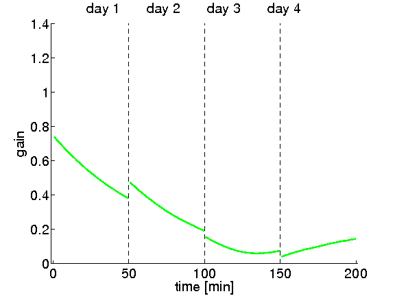
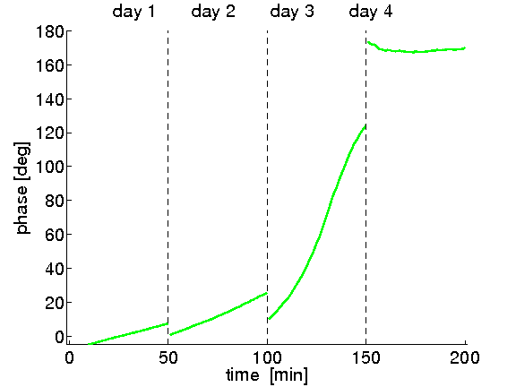

This is the readme for a model associated with the paper: Clopath C, Badura A, De Zeeuw CI, Brunel N (2014) A cerebellar learning model of vestibulo-ocular reflex adaptation in wild-type and mutant mice. J Neurosci 34:7203-15 This model was contributed by Dr Claudia Clopath. Usage: Type "DO_VOR_Clopath14" on the matlab command line after downloading and extracting this archive and cd'ing to the extracted folder. After a minute the following images corresponding to Fig. 4A and B should appear:  